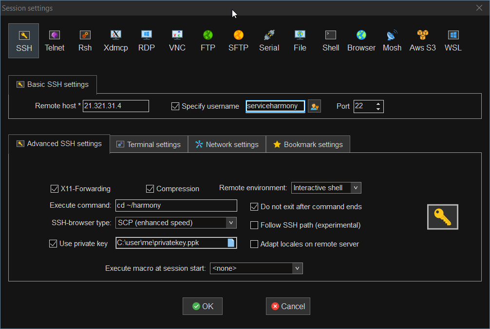

Main
Harmony ONE Installer & Node Software Management Menu Interface
This repository provides two functions in one application:
- Validator Installer - A menu driven installer to help you setup validator nodes fast!
- Management Menu - A management menu to help with common server node tasks!

Support/Contact/Suggestions
We provide limited free support via our Discord Community Chat. The main staking chats are also very familiar with our toolbox, feel free to ask away there as well.
Do you have a suggestion for the validator-toolbox? Review the submitted ideas and post a new one over on the github issues board.
This software is provided without warranty or support, use at your own risk.
Our Software
An introduction to Easy Node Harmony Software Development
Easy Node is a longtime Linux house using it as a daily desktop for many years before being a Linux Systems Administrator full time for the last 15+ years.
We started validating in March and just going through docs.harmony.one we knew there had to be an easier way for validators to get started with Harmony ONE Protocol.
Validator Companion Guide
We first added to the community by producing a living guide to use before/during/after installing the Harmony Validator Software.
After it was created we realized that most of the things you need to know to setup a validator no longer matter once you're online and operational.
Sure, there's certain tasks you'll need to do as an administrator but perhaps we can provide some tools to automate most of those.
Validator's Toolbox & Easy Node Installer Applications
In early July 2021 we started coding a menu application to help us manage our own nodes. This idea quickly spread to an application that could be used by anyone to manage their Regular Validator Signing Server Node.
Once the idea was proposed we were approached with the idea of making it beginner friendly as well as an option for people who simply need to run a "Full Node" on the Harmony blockchain without signing blocks (developer and application use).
Github
Our software is now available on our github page below!
Easy Node's Validator Toolbox!
Quick Install Steps
New Validators
This guide won't work out so well for absolutely new users. You should go through the New Validator Steps and setup a node that way before you attempt the quick version.
Server Prep:
For full details on how to prep your first server from your provider, see our Server Prep section first.
- ✔️ A new Ubuntu 20.04LTS server
- ✔️ Login as a user account with sudoless root access or run and install as root
- Digital Ocean Admins: Use the User Data section from our main guide to do this automatically!
- Other Providers Admins: Use the Any Other Provider Guide on how to edit your sudoers file or give access via groups.
- ✔️ Volume Support
- Digital Ocean Auto Mounted Volumes will be detected and used for installation storage.
- Other Providers: Mount your volume as a folder inside /mnt and it will be detected automatically and used for installation storage.
That's it for the requirements, you're ready to connect to your new server and install the Harmony Validator Server Node software.
Pull & Install on a New or Existing Server:
Pull the repository into your home directory.
cd ~/
git clone https://github.com/easy-node-one/validatortoolbox.git
Install requirements.
cd validatortoolbox
sudo apt-get install dnsutils python3-pip python3-dotenv -y
pip3 install -r requirements.txt
Run the installer from anywhere.
python3 ~/validatortoolbox/toolbox/start.py
First load of application on any server/system:
The first time you run the python application we will build environment settings in ~/.easynode.env
You will be presented with menus to choose your preferred node setup:

Continue onto our Setup Menus section of the main guide for more information on each available choice during our guided menu installer.
Pre-Installtion Requirements
If this is your first node, read this section a few times.
New users will want to know and complete all of the New Validator Steps before moving onto server prep.
The "validatortoolbox" Way of Harmony Server Installation
Here's a full rundown of what happens, regular node operators should be very familiar with the process.
Location
We install your files in your users home directory in ~/harmony
- If you use a volume to store your data, mount it in /mnt/[ANY_FOLDER] and we will install in /mnt/[ANY_FOLDER]/harmony and symlink back to ~/harmony
- This allows nothing else other than your file storage location to change. You can still run & edit everything as per usual in ~/harmony
Variables
We create a file named ~/.easynode.env to store the info you pick on our menus
Wallet & Wallet Password
If you choose a Standard Wallet Node you'll put your mnemonic phrase directly into the hmy interface - We do not pass through or store your mnemonic phrase. Your wallet password is also saved to ~/harmony/passphrase.txt for use later with our menu applicaton & autobidder (if installed).
Volumes - Additional Storage
At this point here's how storage works for our application
- We check /mnt for a single mounted folder.
- If one exists we make a folder inside of that named harmony, symlink it to ~/harmony and install your files there.
- If you have no folders in /mnt - We set up harmony at ~/harmony in a folder. Everything else will be setup to utilize this folder for your application.
New Validator - Pre Server Steps
Here's what you need to get done before you start setting up server equipment or virtual private servers. There's a lot of stuff to cover before you even create a node.
Be sure to review our Validator Operator Companion Guide before jumping in as it'll provide a deep overview of all the things you should know deeper about your server & software.
However you no longer need to know all of the guide as our installer will guide you through setup of a Harmony Validator Node. This reduces the learning curve greatly for simply setting up your server which is only one small hurdle on the path to becoming a validator.
With this in mind, here's a few concepts you need to be extra familiar with and do more research on:
- BLS Keys
- How to create BLS Keys & Pass Files.
- Where to store BLS Keys (If you use our installer, they live in ~/harmony/.hmy/blskeys/)
- How to Backup to your home machine or cloud for recovery
- We suggest learning how to use
scporrsyncor a graphical application to transfer files.
- We suggest learning how to use
TL;DR
Here's the TL;DR of what we cover on the next few pages of this section but that won't help you get a node running. You'll have to go through each of these on your path to becoming a validator.
- Sign up on Digital Ocean and rent server, or utilize another provider of your choice
- Determine shard choice. Personal Preference but we strongly encourage NOT Shard 0 for many reasons for new validators.
- (1-3 recommended at this time for single key validators)
- Create ssh key pub/priv pairs for use to auth on cloud provider service
- Create a github account and upload your .pub key to it so you can see it @ github.com/username.keys
- Create a brand for your validator
- Create a keybase account with your validator logo
- Setup SSH tools for your workstation (Will you be using Windows or MAC to connect to your Ubuntu Linux Server?) - Mobaxterm is our windows recommendation
Server or Provider of Servers
One of the first steps is deciding where to run your servers.
Hardware (or cloud) Requirements
Review the current hardware requirements here.
For shards 1-3 we recommend a 2CPU CPU Optimized Server w/ a 300GB Volume attached ($70/mo as of 9/26/2021, disk size increases over time)
For shard 0 use 2x the CPU power
Cloud Providers
There's unlimited options on who to rent a server from. We've tried many, we suggest the following if you're looking for a cloud hosted server.
- Sign up on Digital Ocean and get $100 for your first 2 months fees - You can signup before creating servers to lock in your account.
- Vultr - A good option as well for a 2nd server on a different provider for redundancy
Other Providers, server purchase required to signup:
- OVHCloud (USA)- We use a bare metal server ADV-2 from OVH for our workhorse backbone server, make sure you get 1Gbps speed + or you may have signing issues
- OVH.com (Outside USA) - Several have reported good servers from OVH
Got suggestions? Stop by our telegram chat and let us know who to check out!
Why do you push Digital Ocean?
There's many reasons but mostly how easy they are to use, the reliability and the cost.
Benefits of using Digital Ocean:
- $100 in free credit. You're gonna need it if you aren't rich.
- Website is super easy to use to create servers & setup your firewall
- Volumes
- Since Harmony's data size has grown volumes help keep costs down
- They can be expanded live, on the fly, without shutting off harmony
- Don't spend too much extra cash on storage!!!!
How to stop worrying and pick a shard
As of 9/24/21 most transactions happen on Shard 0 and it has the largest database size. Every server node deployed always has to have Shard 0, along with the database for Shards 1-3 if you're operating on one of those shards.
We encourage single key/slot validators to stay off of shard 0 at the current time as the hardware costs are 2x the cost on shards 1-3 and there's also a higher risk of having data overage costs on shard 0 as we saw in June during the spam attack on validators.
We suggest looking at the smart stake site and determining which shard of 1-3 has the lowest # of keys and using that shard.
If you grow large enough and want to contribute on Shard 0 later you can simply change keys at an epoch election to switch to new servers on a new shard #.
SSH Keys - Creating Private & Public Key Pairs
How to further secure your server with passwordless login via ssh private/public keys for your VPS provider & Github
If you're using a cloud service for a provider you are most always prompted to upload your public key for the service provider to install on your new server (or droplet if it's Digital Ocean).
Disabling password logins on your server and only using SSH keys is a great way to harden the security of your node. With proper firewall configuration and SSH keys you can seriously lock down the security and make it virtually impossible for attackers to get into your node.
Here's the guide on creating private & public key pairs to use:
Create your key pairs
We suggest running the following command in linux or windows 10 powershell to generate an ssh public & private key pair on your system. After running the command you will be asked a series of questions. If this is your first time running the command it's ok to just hit enter and use defaults for all of these. If you would like to add a password to your key you can but it's not required and will prompt you every time you use it if a password is applied.
ssh-keygen -t rsa -b 4096

This will create the files id_rsa & id_rsa.pub in your user's home directory in the ~/.ssh folder. On windows it goes into C:\users\[your_username].ssh folder.
If you head over to your provider's website, you will be able to upload the contents of your id_rsa.pub folder into the security section of your account. Find the area to add an SSH key, give it a label (usually the PC you made the key on so you know where it lives) and paste the entire contents of your id_rsa.pub file into the box. Press save and you'll now have the key ready to load when creating a new server on that service provider.
This is also a great time to create a github account and upload your public key to the settings section of that account as well. As a validator operator you'll find yourself using github often and ssh access is the best. It also sets up your public key for anyone to use to give you access to servers. You can find your key by modifying the username at the end of this url, here's ours for example: https://github.com/patrickmogul.keys
Brand Your Validator
Now is the time to decide on your brand. Once you're known and people start delegating it's hard to break out after renaming!
This is the point you will have to stop and determine your brand.
Validators are basically independent corporations that need supporters to cover daily operational costs. It'll always suit you best to come up with a brand name that compliments what you've planned out to add to the community.
If you've got enough $ONE saved up to buy a slot for yourself, this isn't much concern but if you're going to be relying on the public to back your validator make some solid choices here at this point.
Create a Validator Logo - Keybase
Add your brand logo to a keybase account so it's ready for your validator
The official Harmony DOCs has a great guide on this. See the page below and create your keybase account. Upload your logo and record your ID number for use when creating your validator.
Harmony Official Guide on Logos
System Administrator Tools
Applicaitons to help you administer your cloud server from home.
Windows Applications
Mobaxterm
Mobaxterm - This is the only real tool you need to access your nodes. The other tools listed below do similar parts of what this does if it's configured properly.
Download and install Mobaxterm onto your Windows PC - Once you've loaded the application, create a new "Sessions" connection. Replace your node IP in the "Remote host" and change the username if needed. This is the initial setup we suggest for connecting to a newly created node on either Digital Ocean or Vultr.

After you've gone through our guide, setup a user account and have a folder made for your application you can change your connection to reflect these settings. Replace the username with the username you use to run your harmony application.

With your SSH-browser type set to SCP you'll also get a WinSCP style window to copy files to your node while you're viewing it in terminal.
You can also load up multiple terminals, run htop or other statistics and commands simultaneously.
We're also going to be loading up a section of scripts and macros to use to manage your system soon, stay tuned!
VS Code
This application for Windows or Mac is the text editor we use to remotely change the files on our nodes. Connects to your droplet via the same SSH key public/private pair you'll create for your user account.
Once you've downloaded and installed the application we recommend going to their Extensions section (CTRL+SHIFT+F) and installing the Remote Development Extension Pack.
Configure your server, user account and IdentityFile in your SSH configuration file for VS Code.
Other Windows Utility Applications
Ubuntu 20.04 LTS - If you're running Windows 10, go to the Microsoft Store and install Ubuntu 20.04 LTS. It's super helpful to use since your nodes will be Linux anyways.
Putty - Connection manager and key generator for SSH connections
WinSCP - Import connections from putty and transfer files with an explorer style interface
Mac
Mac operators shouldn't really need many extra tools over their normal terminal. If there are any suggestions please let us know in our telegram chat!
Filezilla - If you would like a gui to use to transfer your BLS Keys, we recommend Filezilla on Mac.
Server Prep
Things you need to know before downloading the validator-toolbox
There's a few paths here depending on your experience level.
Digital Ocean
Here's what you need to get done to install validator-toolbox on a brand new droplet that you plan to run as a Harmony ONE Validator.
Droplet (Server) Creation
Log into the Digital Ocean website, and select create a new droplet.
Here are our current suggestions:
Choose an Image
Choose only Ubuntu 20.04 (LTS) x64 here.

Choose a plan
The server size you pick is up to you and your budget. We suggest using Dedicated CPU Optimized nodes with the following specifications at a minimum:
Shard 0 - 4+ dedicated CPU server node
Shard 1-3 - 2+ dedicated CPU server node

Add block storage
Click add Volume - You will use block storage to hold all of your harmony files. Block storage can be expanded without interrupting your node so it's a very economical choice for saving money if you can manage your disk space wisely.
We currently suggest using 250GB+ for your storage volume. Check with the pangea telegram chat or harmony official discord to verify shard size if this is your first download.
You will want to Automatically format & mount the volume and you can leave the filesystem type as Ext4.

Choose a datacenter region
This one is open for debate but we stick to north american servers as they seem to have the best download and response times for the blockchain. If you have slow rclone speeds or missed signings consider using a north american server for your next build.
VPC network
You can skip this option
User Data

You can easily make your server compliant to run validatortoolbox by selecting "User data" here along with "Monitoring" as options. This will setup a proper user account with access and all the required packages to run validatortoolbox and the Harmony software without any manual setup.
Once you check the "User Data" box a large box will appear to input code. Copy the box below and edit the information to include:
- Customize the username: We have pre-filled
serviceharmonyas our username suggestion but anything other than root works here! - ssh-authorized-keys: Add your own ssh-rsa public key in place of the ssh-rsa example key below to inject it into the account name you are creating above.
#cloud-config
users:
- name: serviceharmony
groups: sudo
shell: /bin/bash
sudo: ['ALL=(ALL) NOPASSWD:ALL']
ssh-authorized-keys:
- ssh-rsa AAAAB3NzaC1yc2EAAAADAQABAAA_EXAMPLE_KEY_ONLY_OOHch79N5OnB136TaVdXPQFaYFzubA1Lzbeus5H2BcbMieDyGBBTh4gEEkz2hsGCXeaw==
package_upgrade: true
packages:
- dnsutils
- nethogs
- python3-pip
- python3-dotenv
Once you have your code customized, paste it into the User Data box as shown:
Authentication
The keys listed in this section get injected into the root account for the server. It's always good to use your keys here as a backup login method. Select any keys you would like to use.
Don't have any keys here? Go back to the New Validator Pre-Install and learn how to create a key pair.
Finalize and create
Here you will pick how many copies of this server you would like, 1 will do.
You also choose a hostname. This is just a label you set to know which server you are on. We will display this name on the validator-toolbox so you know which server you are looking at currently.
Add tags
Here you can apply a label to your new server. We have a tag setup named ONE that applies our firewall rules. Learn how to configure your firewall for digital ocean and use a tag in this guide here.
Select Project
If you use a project to keep track of your servers, select it or create one here.
Create Droplet
Now it's time to create your droplet. Click the button to get started and your server will start building.
After a few minutes, you will be able to use ssh to gain access to your new server.
Firewall
Here's some tips for going pro with your digital ocean firewall.

- You only need ports 6000 & 9000 open to all IP addresses.
- Port 22 for SSH access only needs to be allowed from your current IP (see whatismyip.com for your current external IP address)
- If you try to access from another location, simply add that IP into the website firewall and remove when back home
- On the droplets section of your firewalls page, create a tag
- Apply that tag to all current servers and they will get that firewall automatically
- Apply the tag while creating a server and it will get that firewall automatically

Any Other Provider
Here's what you need to get done to install validator-toolbox on a brand new Ubuntu 20.04LTS Server that you plan to run as a Harmony ONE Validator.
Server providers not named Digital Ocean:
Here's what you need to setup for our application to run smoothly the first time you want to setup a new node:
- Operating System
- Ubuntu 20.04LTS - The suggested operating system from harmony
- Account
- Be logged into any user account, we strongly suggest not using root.
- Account must have sudoless root access (if not using the root account)
- If you skip this step, you will be prompted for your password during rclone setup but it will be hidden in the menu. If it pauses there type your user account password.
- Storage Volume
- Mount your volume to any folder inside of /mnt and we'll detect a single mount point inside of that folder, install harmony in /mnt/yourfolder/harmony and symlink that folder to ~/harmony
Sudoless Root Access Setup
Grant a group sudoless access and add the user or give the user root access directly.
As your root account, use the editor of your choice modify the file /etc/sudoers as show (nano example below):
sudo nano /etc/sudoers
Inside of the file add a new line with your user account name. We've added serviceharmony in our example below:
serviceharmony ALL=(ALL) NOPASSWD:ALL
Save the file and exit.
You'll need to disconnect your account and reconnect before the permissions are enabled. After reconnecting you are ready to run the easy-node-installer Application or validator-toolbox Application.
After Installation
After installation you can remove these settings to run your account normally.
Installation Guide
Here's the steps to installation! The validatortoolbox application can be installed on existing nodes to utilize the management menu along with running on brand new servers to setup the Harmony Validator software.
First Step
Clone our Github repository while inside your home folder**.** Log into your new server as the user account you created. From the home folder of your non-root user account clone our repository using the HTTPS or SSH commands below:
cd ~/
git clone https://github.com/easy-node-one/validatortoolbox.git
Install requirements for the validatortoolbox application
To get all of the requirements installed for validator-toolbox run the following code:
cd ~/validatortoolbox
sudo apt-get install dnsutils python3-pip python3-dotenv -y
pip3 install -r requirements.txt
Start the Harmony ONE Validator Node Installer
If this is the first time the validatortoolbox is run on a brand new node we will install the Harmony ONE Validator Software for you!
On the first run on a new or existing node our menu will ask you some questions about your preferences to help build our catalogue.
To launch the installer or the interface menu simply run:
python3 ~/validatortoolbox/toolbox/start.py
The Setup Menus
Here's more information about each setup menu along the way!
Loading Screen

First run detected!

Start Installer Application - Run this option if you are loading a brand new server for the very first time.
Start Validator Toolbox Menu - Run this option if you are loading the toolbox on a server that is already running as a harmony validator node.
Shard Choice

Simply pick the shard this node will run on. It's a personal preference.
Node Type

Standard Signing Node - Known to most as a "Harmony Validator" this option loads a wallet and saves your passphrase in ~/harmony/passphrase.txt
Full Node Non Validating Dev/RPC - Choose this option to load a system that doesn't use a wallet. Mostly used by developers and RPC services
Testnet or Mainnet

Mainnet - The main Harmony ONE Blockchain for normal operations.
Testnet - The Harmony ONE Testnet, use with test tokens. You can visit our telegram if you need test network coins, we have plenty.
Express Install or Manual Choices

Express Install - Assumes you want the kitchen sink for your validator.
Manual Approval - This lets you choose y/n on every option along the way.
Password File (Regular Signing Validator Nodes Only)

Enter a password for your wallet on this node. It's unique to this server
Recover Wallet (Regular Signing Validator Nodes Only)

Add your mnemonic phrase here directly into the hmy file interface. We do not store or save this information.
New Users - If you do not have a wallet yet, press ctrl+c to skip wallet recovery and after installation you can manually create or import a wallet of your choosing.
Clone Shards
You will now start cloning your shards. If you choose shard 1-3 that shard will download before shard 0. You can press ctrl+c to cancel downloading of any shard to move past that download.


Install completed!

Launch the validatortoolbox
Startup
If this is the first time the validatortoolbox is run on a brand new node we will install the Harmony ONE Validator Software for you!
On the first run on a new or existing node our menu will ask you some questions about your preferences to help build our catalogue.
To launch the installer or the interface menu simply run:
python3 ~/validatortoolbox/toolbox/start.py
'What to do while downloading your shards, or after!'
Once your shard download begins you can create or load your BLSKeys onto the server via another terminal session.
BLS Key & Pass Creation / Upload
After the installer completes it will return you to the command prompt.
At this point you will need to upload your bls key & pass files you would like to use, or create some new BLS key files using this guide.
Reboot Server
Once your keys are in place, reboot your server. After the restart is completed your node will start the synchronization process with the blockchain.
After rebooting, reconnect via ssh and run the following command to launch the validator-toolbox menu.
Having problems? Here's how to reset our app and try again!
Harmony Application Troubleshooting
Harmony troubleshooting is actually quite simple. Here's how we suggest getting better messages to determine your issue:
Stop your harmony service:
sudo service harmony stop
Move to your ~/harmony folder and run harmony manually. This bypasses the service and allows for better error messages.
cd ~/harmony
./harmony -c harmony.conf
Analyze your error message and resolve or ask in Discord Chat about the solutions!
Validator Toolbox Troubleshooting
For any issues with the toolbox, or if you'd like to re-run it after launch it the first time simply remove ~/.easynode.env from your server and rerun our script. That will trigger setup once again.
You can log an issues or bugs on our github page as well.
No Module Found Error
ModuleNotFoundError: No module named 'xxxxxxxxxx'
This error is easy, perform the following and then re-run start.py
cd ~/validatortoolbox
pip3 install -r requirements.txt
A list of things to come, see our github for tracking!
Supercharged Data
We're going to start utilizing the full API to pull better stats data for option #1.
BLS Keys
BLS Key management is complex and we're not sure if it can be coded in at this point without liability but we'll be proposing this as a project soon!
Create, Add, Remove, although we'll have to add a lot of annoying messages about backing them up to your home machine.
Web Integration
Investigating the use of an internal web server for private control of your node. Would need to be secured and protected but this is a possible feature we'll be adding down the road.